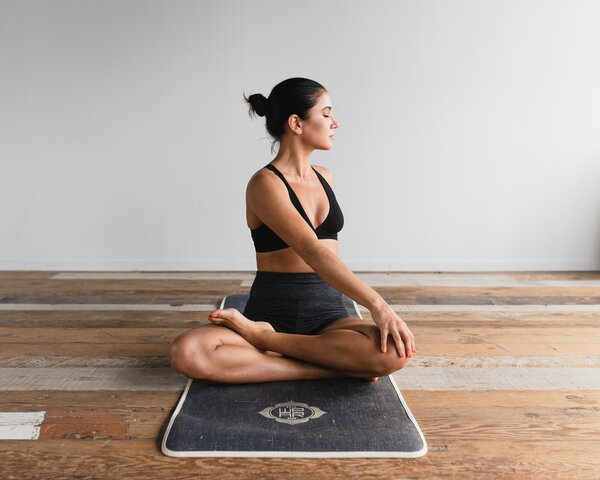
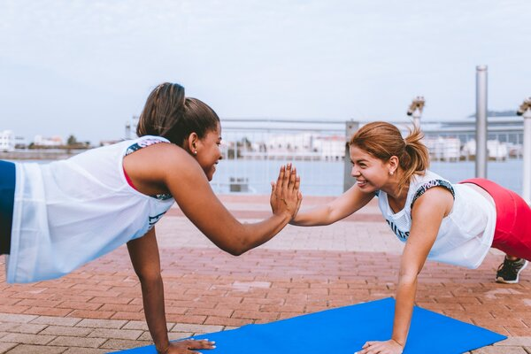
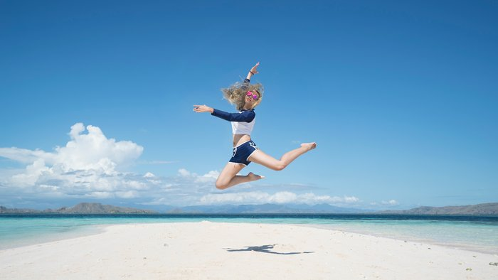

EASIEST AND HEALTHIEST WAYS TO GET BACK IN SHAPE
Whether you’ve been going through a rough patch or just enjoying your life for a while, you’ve probably gained some weight. But, don’t worry – this happens to everyone, and that’s only natural in these situations! What you need to do is find a way to get back in shape as quickly as possible. It’s not just about your looks, but your health as well: too much weight can endanger your health in more ways than one, and avoiding this situation is a must. So, if this is something you’d like to do as well, here are a few ideas you should look into.
Change Your Diet
This is the first thing you need to do, but it’s also the easiest way to lose weight and get back in shape. Instead of eating lots of unhealthy meals every single day, you need to remove them from your diet and replace them with healthier food choices. This might not be easy and it could take a while, but it’s the right thing to do.
The problem most people have with this idea is believing that healthy food can’t be tasty. On the contrary, you can find amazing recipes for different meals that are packed with healthy ingredients but are also tastier than you can imagine. From a simple avocado toast to a tasty slow-cooked stew, these recipes will give you lots of ideas and prevent you from eating unhealthy food ever again.
Join A Gym
This is another simple idea that can go a really long way, but only if you stay dedicated and committed to it. Working out three to five times a week will produce amazing results in just a month or two, and you’ll be able to boost your health significantly. You’ll get leaner, you’ll boost your muscles, and you’ll improve your physique, and that’s something we all want.
However, working out might sometimes not be enough – in case you have a weight problem or don’t have enough time for a gym, you’ll need some help. That’s why you might try finding some of the most effective premium protein you can add into your shakes and achieve more in less time. This powder will also help your muscles relax and recover after an intensive training session, and you’ll be ready to go on with your day without pain and soreness.
Try Outdoor Activities
If you’re not a fan of spending your time in the gym, you should look for alternative solutions that could be just as effective as lifting weights. Some of the best outdoor activities for losing weight include power walking, rock climbing, swimming, jogging, and playing various sports. What’s great is that there are so many options to choose from, so you shouldn’t have a problem picking your favourite activity.
Another amazing benefit of being in the open is working on your health and boosting your physical and your mental health. Spending your time in nature will make you feel better and show you what an amazing world we’re living in, and that’s something we all need from time to time.
Be Realistic
Finally, this should be the easiest thing to do when you’re trying to lose weight and wanting to get in shape – because you’re not actually doing anything, but only thinking about things that need to be done – but that’s not always the case. Thinking about your nutrition and workout plan in realistic terms is sometimes harder than you can imagine, but there’s a simple solution: just be realistic about these things.
What you need to do is set realistic short- and long-term goals, as well as the desired weight you’d like to achieve at a particular point in the future. These things depend on your age, your sex, your current weight, and your daily activities, so you need to understand how much weight you can lose in a month, and then set your goals in accordance with that number. Achieving miracles overnight is impossible, so stay patient, stay focused, and stay committed to your goals until you reach them.
Some of the other ways to lose weight, such as coolsculpting cost – non-surgical method to lose weight, and get back in shape include getting enough sleep, drinking lots of water, building up your workout plan gradually, and creating a support system, making sure everyone around you is rooting for you and helping you out.